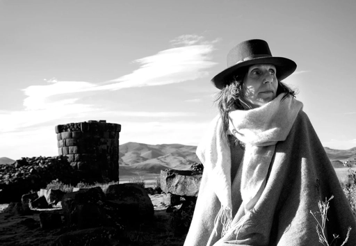
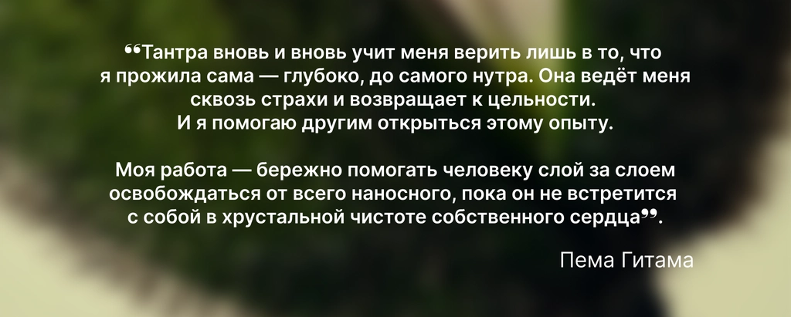
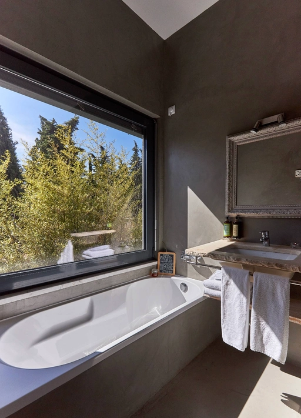

Замечать раньше, чем реагировать
Возвращаться к ощущениям, дыханию и тонкости восприятия.

5–11 октября 2026 · DOMA Portugal
Семь дней практики присутствия и целостности с Пемой Гитамой — через тело, дыхание, эмоции, сердце, речь и живую встречу с другими.
Мы привыкли жить из головы: анализировать, держать себя в руках или убегать в бесконечную стимуляцию. Всё это помогает — пока не начинает управлять нами.
Wild Tantra — практика присутствия и целостности. Опыт осознанного проживания происходящего, когда замечаешь, что происходит в теле, сердце и уме, не спеша это объяснять, подавлять или немедленно разряжать.
Ответ жизни постепенно рождается не из привычной реакции, а из контакта с собой — искренне и всем существом.
Это не универсальное определение всей тантры, а авторский подход Пемы Гитамы, созданный на принципах традиции Каулы.
Тантра не делит внутренний опыт на правильный и неправильный. Ни одно проявление энергии не нужно исключать — каждому можно найти место, форму и направление.
Возвращаться к ощущениям, дыханию и тонкости восприятия.
Давать место страху, гневу, ревности, радости, удовольствию и силе.
Соединять тело, ум, сердце и речь в один живой ответ.
В октябре состоится пятый совместный ретрит. Пема уже знает общий бэкграунд сообщества, семейные и поколенческие истории, отношения с телом, собой и другими. Этот накопленный опыт становится частью живой программы.
02 · Как устроена практика
Пема соединяет тантрические медитации, дыхание и работу с праной, телесные практики, ритуалы, методы Каулы и Чод. Что-то проживается наедине, что-то — в паре или всей группой.
Возвращение к ощущениям, естественной чувствительности, удовольствию и способности замечать тонкие изменения.
Исследование того, как мы цепляемся, защищаемся, повторяем знакомое и удерживаем энергию в одних и тех же ловушках.
Способность услышать свою правду и дать ей стать словами, в которых есть жизнь.
Индивидуальная работа переплетается с практиками в парах и общим полем группы. Направление живой работы задаёт то, что происходит прямо сейчас.
Тело, дыхание, удовольствие и напряжение.
Привычные реакции, защиты и повторения.
Правду сердца и слова, которые дают ей форму.
Тело, ум, сердце и речь в целое.
Это не почасовое обещание программы, а честная рамка нагрузки из исходного описания.
03 · Важно знать
Исходная страница подробно описывает философию, но не отвечает на несколько практических вопросов. До полной оплаты их важно проговорить на ознакомительном звонке.
Какие парные практики предполагают физический контакт? Есть ли нагота или сексуальные техники?
Можно ли отказаться от упражнения без объяснений, сменить партнёра или выбрать индивидуальный формат?
Какие есть противопоказания к интенсивному дыханию, длительной нагрузке и другим практикам?
К кому обратиться при сильной реакции? Как устроены индивидуальная поддержка и конфиденциальность?
Чем отличаются траектории новых и продолжающих участников внутри объединённой программы 2026 года?
Есть ли рекомендации, встреча или группа поддержки после возвращения домой?

04 · Мастер
Больше 25 лет Пема следует и передаёт традицию Тантры Каула. На её принципах она создала WildTantra — собственный подход к практике, раскрытый в трёх книгах и ретритах по всему миру.
Пема ведёт так же, как говорит о тантре: не сглаживая и не подгоняя живое под готовую форму. В ней соединяются мягкость и сила, любовь и острота, глубина и дикость.
«Тантра — цветок: её аромат — любовь, её форма — сознание».

Историческая усадьба в сосновом лесу, в получасе от Лиссабона и океана — место для глубокой работы и бережного восстановления.

Светлый зал для практики, паровой купол, ледяная ванна, террасы, бассейн и комнаты. Каждый день — специальное веганское меню от шефов DOMA, разработанное вместе с Пемой под ритм недели.
Открыть сайт DOMA ↗




06 · Отзывы


«Я пару раз плакал от одной только мысли, что со мной этот опыт мог бы не случиться. Сначала тебя родили, а потом ещё нужно самому почувствовать себя по-настоящему живым».
«Насколько ты можешь развернуть в себе боль, настолько же и сила любви вырастет во все измерения над ним».
«Это было про встречу с Мастером. Сразу стало понятно, какой огромный масштаб держит Пема. Даже во взрослом возрасте можно создать близкие и глубокие отношения».
«Я вернулась домой — к мудрости моего тела, которое всё знало, а я забыла. Давно в моей жизни не было такой ясности, как та, которую я получаю в тантре».
«Один из самых впечатляющих и глубоких опытов. Исследование взаимодействия, энергии, чувственности, телесности и включённости в момент».
Пема, участники и ведущие VAHUE говорят о том, что происходит на практике и зачем люди возвращаются.
08 · Стоимость
Место бронируется после полной предоплаты. Проживание, дорога до Португалии и трансферы в стоимость не входят.
Как присоединиться
Расскажите немного о себе и своём намерении.
Команда расскажет о процессе, ответит на вопросы и вместе с вами поймёт, подходит ли этот опыт сейчас.
Все заявки сначала попадают в вейтлист. Место закрепляется после решения команды и полной оплаты.
Организаторы отмечают, что мужчинам часто сложнее сделать первый шаг. Поэтому при рассмотрении женских заявок преимущество будет у тех, кто хочет приехать с мужчиной +1 — это может быть партнёр, друг или близкий человек.
То, что уже можно понять из программы — и то, что необходимо уточнить лично.
Wild Tantra · Portugal · 2026
По ссылке — короткая форма. После неё команда напишет и договорится о звонке, чтобы познакомиться, обсудить детали и вместе понять, подходит ли вам этот опыт.
Заявка не равна автоматическому бронированию места.